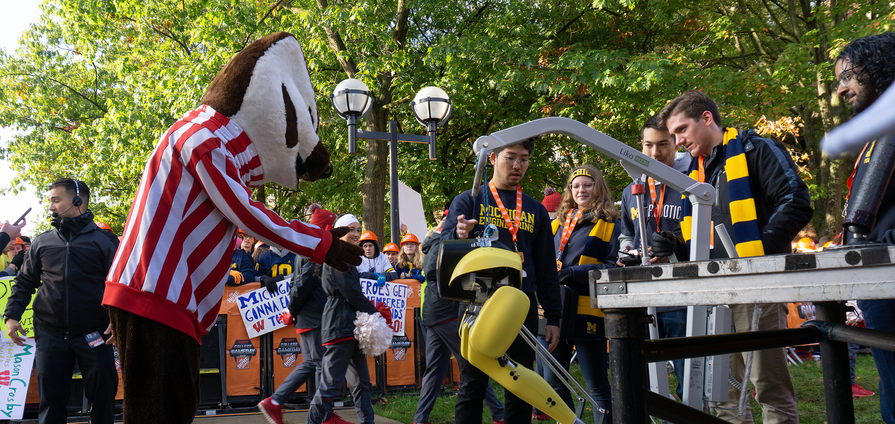

Mechanical Engineering Ph.D. Candidate
University of Michigan ROAHM Lab

About
I am a Ph.D. candidate in Mechanical Engineering at the University of Michigan, advised by Prof. Ram Vasudevan in the Robotics and Optimization for Analysis of Human Motion (ROAHM) Lab.
My research interests include modeling, controls, and optimization applied to human movement. I’ve worked on both quantifying stability and uncovering underlying optimality criteria in the sit-to-stand motion. I aim to increase safety in wearable robotic systems, such as exoskeletons and prostheses, during dynamic tasks.
I have also worked in EMBiR Lab with Dr. Talia Moore, using engineering tools to investigate hypotheses about biomechanics and evolution in coral snakes.
I graduated from the University of Portland with a B.S. in Civil Engineering in May 2016.
I am a National Science Foundation Graduate Research Fellow.
Research
Inverse Optimal Control
Humans may be determining the optimal torques to apply to their joints according to certain criteria, such as minimizing energy. Given a set of observations (e.g., joint angles and torques) from a dynamic human task, inverse optimal control (IOC) helps uncover a cost function, which identifies important objectives.
Once this optimality criteria is established, the cost function can be used to predict how a human may respond to a perturbation during motion. Knowledge of how a human reponds to disturbances can be useful in designing controllers for wearable robotics.
The figure above shows an example of IOC prediction results. A subject's sit-to-stand motion has been modeled as an inverted pendulum. Predictions of the angular position and velocity after a cable-pull perturbation are shown as the dotted lines.
Sit-To-Stand Stability
Fall risk can be mitigated by identifying those who are unstable and providing targeted physical therapy. However, no existing method of quantifying stability in human motion has been shown to reliably predict fallers. We use dynamic modeling and reachability to create Stability Basins, which characterize the set of perturbations one can withstand while completing a dynamic task.
To investigate whether our method correctly estimated the stable region, we conducted an experiment where subjects were perturbed by motor-driven cable pulls during the sit-to-stand motion. We formed and validated individualized Stability Basins for 11 subjects, confirming that our analysis accurately predicted the instances where the subject stepped or sat back down in response to perturbation.
The figure above shows all successful sit-to-stand trials contained within the Stability Basin, and an example of a perturbed trial where failure was predicted before the step occurred.
Evolutionary Hypotheses using Engineering Tools
I analyze animal biomechanics with Dr. Talia Moore, PI of EMBiR Lab, to uncover explanations for patterns in evolution and ecology. Often, engineering and robotics can help us test hypotheses and learn more about animal movement.
Our recent work involves analyzing the behavior of wild Micrurus coral snakes. In additon to their high-contrast color patterns, these snakes use a vigorous thrashing display to keep predators away, which has only been qualitatively described.
We quantified the thrashing behavior to investigate how much variation is present within and among coral snake species.
Automated Rehabilitation Assessment
Physical therapists qualitatively assess patients' performance on a leg press machine as they recover from anterior cruciate ligament (ACL) reconstruction surgery. In addition to a clinician's expertise, measuring forces during this activity could provide a quantitative assessment of rehabilitative progress. This project utilized a stereo camera coupled with publicly available pose estimation software to accurately estimate the forces produced by patients.
In the figure above, (a) depicts the approximate stereo camera view as well as the estimated 2D positions of the participant's joints, (b, c, d) show the estimated shank, thigh, and trunk positions at the beginning, middle, and end of a leg press repetition, and (e) plots the estimated force on the foot plate from video data alone.
Publications
Journal Papers
P. D. Holmes, S. M. Danforth, X.-Y. Fu, T. Y. Moore, and R. Vasudevan, "Characterizing the limits of human stability during motion: perturbative experiment validates a model-based approach for the Sit-to-Stand task," Royal Society Open Science, January 2020. [url]
T. Y. Moore, S. M. Danforth, J. G. Larson, and A. R. Davis Rabowski, "A quantitative analysis of Micrurus coral snakes reveals unexpected variation in stereotyped anti-predator displays within a mimicry system," Integrative Organismal Biology, February 2020. [bioRxiv preprint]
Conference Papers
S. M. Danforth, M. Kholer, D. Bruder, A. R. Davis Rabosky, S. Kota, R. Vasudevan, and T. Y. Moore, "Emulating duration and curvature of coral snake anti-predator thrashing behaviors using a soft-robotic platform," IEEE International Conference on Robotics and Automation, Paris, France, June 2020. [arXiv preprint]
S. M. Danforth, J. T. Martz, A. H. Root, E. B. Flynn, and D. Y. Harvey, "Multi-source sensing and analysis for machine-array condition monitoring," in Proceedings of the SEM XXXV International Modal Analysis Conference, Garden Grove, CA, January 2017. [url]
T. A. Doughty, L. J. Cassidy, S. M. Danforth, and N. Pendowski, "Varied system geometry and noise implementation applied to nonlinear model tracking," in Proceedings of the ASME 2016 International Mechanical Engineering Congress and Exposition, Phoenix, AZ, November 2016. [url]
T. A. Doughty, L. J. Cassidy, and S. M. Danforth, "Implementing noise, multi-frequency stimulus, and realtime analysis to nonlinear model tracking," in Proceedings of the SEM XIII International Congress, Orlando, FL, June 2016. [url]
Presentations
S. M. Danforth, J. G. Larson, A. R. Davis Rabowski, and T. Y. Moore, "A Kinematic Analysis of Micrurus Coral Snake Thrash Duration and Curvature Enables Quantitative Characterization of Non-Locomotory Behavioral Motion," presentation in Society for Integrative and Comparative Biology, Austin, TX, January 2020.
S. M. Danforth, P. D. Holmes, and R. Vasudevan, "Inverse optimal control with sit-to-stand data," presentation in Dynamic Walking, Canmore, Alberta, Canada, June 2019.
P. D. Holmes, X.-Y. Fu, S. M. Danforth, T. Y. Moore, and R. Vasudevan, "N-step reachability to characterize human mediolateral stability during perturbed walking," poster presentation in Dynamic Walking, Canmore, Alberta, Canada, June 2019.
P. D. Holmes, S. M. Danforth, T. Y. Moore, and R. Vasudevan, "Perturbative sit-to-stand experiment for validating a quantitative method for stability estimation," presentation in World Congress of Biomechanics, Dublin, Ireland, June 2018.
P. D. Holmes, S. M. Danforth, T. Y. Moore, and R. Vasudevan, "Perturbative sit-to-stand experiment for validating a quantitative method for stability estimation," presentation in Dynamic Walking, Pensacola, FL, May 2018.
P. D. Holmes, S. M. Danforth, T. Y. Moore, X. Y. Fu, and R. Vasudevan, "Humans minimize error in task-relevant dimensions during sit-to-stand," presentation in Dynamic Walking, Mariehamn, Finland, June 2017.
Honors and Awards
2019
People's Choice Award Winner, Scientific Visualization Competition, University of Michigan
2019
Attended Rising Stars in Mechanical Engineering workshop, Stanford University
2018-Present
Graduate Research Fellowship Program Recipient, National Science Foundation
2015
Education Foundation Scholarship Recipient, American Institute of Steel Construction
2015
Tau Beta Pi Scholarship Recipient
Science Communication
Videos
A highlight of my time as a Ph.D. student has been creating videos to ensure my work is presented in a straightforward manner. Here is a video I made recently for some work published in Integrative Organismal Biology:
In addition to making videos about my own research, I am interested in creating more general videos for outreach and education. Below is a 20-minute outreach activity for middle schoolers that introduces engineering ethics and design. I made this video for a group project in IOE 491: Quantifying Human Motion Through Wearable Sensors.
I have begun to work with the Michigan Engineer News Center staff so I can gain more experience in science journalism. My first news article is about UM student Dan Bruder designing and prototyping a DIY ventilator.
Fun (and still slightly informative) Videos
Entertaining videos can make STEM research more accessible to a non-technical community, and also give colleagues a laugh when submitted to conferences every once in awhile. Here's a video I wrote and edited for the Dynamic Walking annual meeting, starring my labmate Patrick:
This video was also featured on IEEE Spectrum's Video Friday.